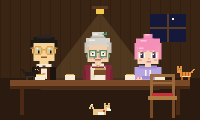

一九六八
二號月台
嗰年我十九歲。由香港坐船去馬賽，再轉火車落巴塞隆拿。一個喼，一樽鹹檸檬，一句加泰隆尼亞話都唔識。我喺車上喊，喊到赫羅納。跟住食咗粒鹹檸檬，就冇再喊喇。人生係咁㗎，酸酸地，就唔喊。
喺鎮上搵到：「近鄰站」二號月台，時刻表後面嗰年我十九歲。由香港坐船去馬賽，再轉火車落巴塞隆拿。一個喼，一樽鹹檸檬，一句加泰隆尼亞話都唔識。我喺車上喊，喊到赫羅納。跟住食咗粒鹹檸檬，就冇再喊喇。人生係咁㗎，酸酸地，就唔喊。
喺鎮上搵到：「近鄰站」二號月台，時刻表後面落車嗰陣，啲牌我一個字都睇唔明。有個後生仔，成身機油味，問我去邊。佢叫 Josep，係睇住車站個大鐘嘅。佢一路陪我行到我表姐門口，我連多謝都唔識講。後來佢起咗個慢鐘，佢話：「咁啲好時光就可以留耐啲。」傻佬嚟㗎。
喺鎮上搵到：慢鐘入面，紅繩掛住條鎖匙聖佐治節，男仔送玫瑰，女仔送書。佢送咗朵玫瑰俾我。我冇錢買書，就送咗本粵語–加泰語字典俾佢，夾張紙仔：「學。學識先同我講嘢。」佢真係學喎，成本字典寫到密密麻麻。朵玫瑰我而家仲夾喺入面。
喺鎮上搵到：「借來的書」，一本黐滿膠紙嘅字典我哋開咗間麵舖，就喺而家「隔壁」嗰度。每晚賣完最後一碗麵，Josep 就將啲櫈反轉擺上枱，放我哋嗰隻波萊羅，兩個人喺枱同枱中間跳舞。兩個女喺麵粉包上面瞓著咗。嗰陣好窮，但係好開心。
喺鎮上搵到：「同一首歌」，唱片箱最底我樽鹹檸檬有粒核，我將佢種落地，生咗棵檸檬樹。每年夏天，我叫兩個女企喺樹度，喺樹皮刻條線，睇吓高咗幾多。刻到佢哋高過我嗰年，就冇再刻喇。高過阿媽，就係時候飛喇。
喺鎮上搵到：「種個朋友」最入面Mei 阿媽去紐約嘅前一晚，兩姊妹為咗個碗爭，一人扯一邊，兩個都喊，個碗就爛咗。我將啲碎片收埋喺餅乾罐，一收就收咗三十年。舊年冬天，阿 Wei 用金補返佢。爛咗，再靚啲。一家人都係咁。
喺鎮上搵到：「金繕坊」個架上佢每個月都寄張明信片返嚟：自由神像、地鐵、中央公園落雪。差唔多張張都寫：「好想飲你煲嘅湯。」我用廚房條棉繩紮埋一紮。最新嗰張係粉紅色筆寫嘅：「婆婆！！媽媽話我放假可以嚟。唔好話俾 Wei 知！」嗰個就係 Mei 喇。好百厭，好得意。
喺鎮上搵到：「問個好」，用棉繩紮住Josep 走嗰年冬天，二號月台嚟咗隻奶油色嘅狗，坐喺佢以前上鍊嗰個鐘下面，點都唔肯走。我每朝帶碗嘢俾佢食。佢等七點四十嗰班車。我都係，少少啦。後來我買咗個紅頸圈俾佢，叫佢饅頭，拖佢返屋企。
喺鎮上搵到：「回家吧」個櫃桶有人喺麵舖門口留低個紙箱，寫住「味噌 / 柚子，醃菜樽，小心輕放」，入面有兩隻貓仔。阿 Wei 嗰年十歲，就照住個標籤改名。我話唔要貓，講咗成個下晝。之後？之後佢哋霸住我張櫈喇。
喺鎮上搵到：味噌同柚子屋企，佢哋最鍾意嗰個紙箱Josep 走咗之後，個個都去咗好遠，剩返我一個守住間舖。星期日我仍然會上山，去我哋間小屋，佢親手起嘅：我啲相簿喺度，佢部收音機，張氈。阿 Wei 細個喺個窗台度畫簿：麵舖、車站、慢鐘、檸檬樹、公公帶佢哋釣魚嗰個湖。最後一頁佢寫：「如果我哋唔可以個個都返屋企，或者屋企可以嚟搵我哋。」所以就有咗近鄰。
喺鎮上搵到：「不急」，婆婆間小屋，窗台上面收舖之後，大家都喺度：阿 Wei 特登趕返嚟，Mei 擺枱擺到亂晒，湯喺爐度，兩隻貓喺吧枱，饅頭喺枱底。我打開個罐，將你搵到嘅嘢一樣一樣擺出嚟。最後放張相：我哋全部人，仲有一張空櫈。
喺鎮上搵到：「隔壁」，收舖之後